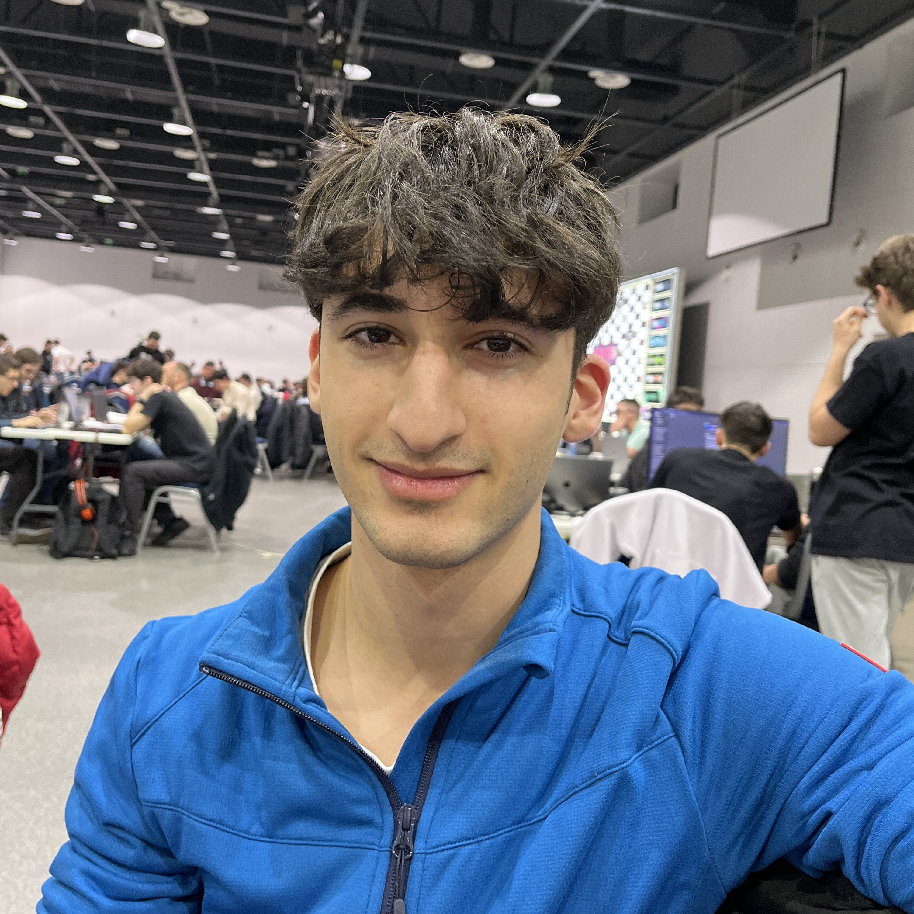

QuizStix
Ръководство
- My Profile - Страница, в която учителят може да преглежда своите стари викторини, да генерира статистики на база на резултатите от тях и да създава нови такива.
- Upload page - Страница, към която учителят бива пренасочен при създаване на нова викторина. В нея той може да селектира файл, от който да бъде извлечена информация за нея, както и от колко въпроса да бъде.
- Quiz - Страница с въпросите от викторината, която учениците трябва да попълнят. Всяка викторина се състои от въпроси с 4 избираеми затворени отговорал. При предаване на викторината, ученикът може да види кои са правилните отговори на всеки въпрос от нея.
- Statistics - Страница, към която бива препратен учителят, когато избере опцията за генериране на статистики в My Profile. В нея той може да види диаграми, свързани с резултатите на учениците, попълнили съответната викторина.
Създатели
 Александър
Александър

Валентин
 Петър
Петър
 Симеон
Симеон
 Стилиян
Стилиян